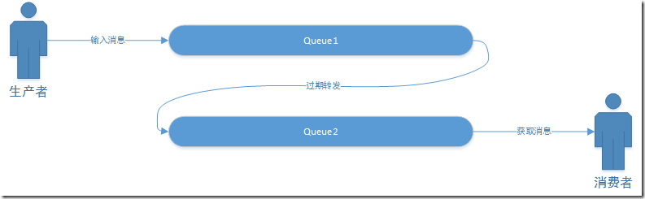
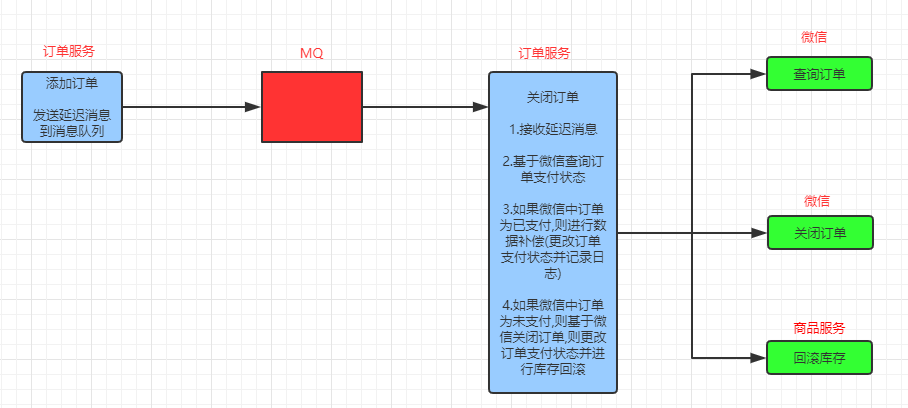
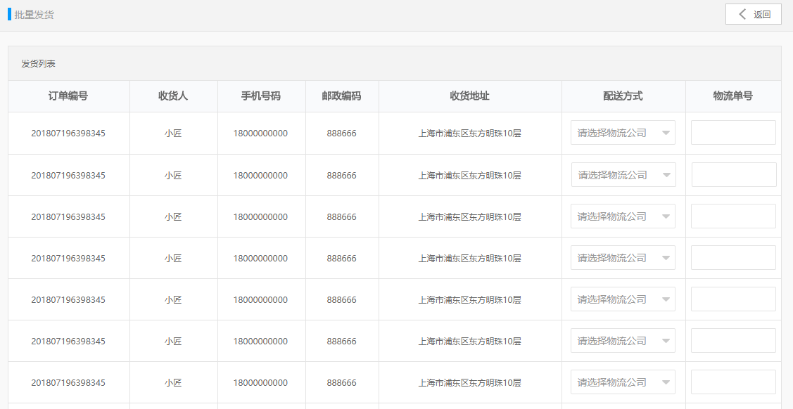

超过限定时间并未支付的订单，我们需要进行超时订单的处理：先调用微信支付api，查询该订单的支付状态。如果未支付调用关闭订单的api，并修改订单状态为已关闭，并回滚库存数。如果该订单已经支付，则做补偿操作（修改订单状态和记录）。
如何获取超过限定时间的订单？我们可以使用延迟消息队列（死信队列）来实现。
所谓延迟消息队列，就是消息的生产者发送的消息并不会立刻被消费，而是在设定的时间之后才可以消费。
我们可以在订单创建时发送一个延迟消息，消息为订单号，系统会在限定时间之后取出这个消息，然后查询订单的支付状态，根据结果做出相应的处理。
使用RabbitMQ来实现延迟消息必须先了解RabbitMQ的两个概念：消息的TTL和死信Exchange，通过这两者的组合来实现上述需求。
消息的TTL就是消息的存活时间。RabbitMQ可以对队列和消息分别设置TTL。对队列设置就是队列没有消费者连着的保留时间，也可以对每一个单独的消息做单独的设置。超过了这个时间，我们认为这个消息就死了，称之为死信。
我们创建一个队列queue.temp，在Arguments 中添加x-message-ttl 为5000 （单位是毫秒），那每一个进入这个队列的消息在5秒后会消失。
一个消息在满足如下条件下，会进死信交换机，记住这里是交换机而不是队列，一个交换机可以对应很多队列。
（1） 一个消息被Consumer拒收了，并且reject方法的参数里requeue是false。也就是说不会被再次放在队列里，被其他消费者使用。
（2）上面的消息的TTL到了，消息过期了。
（3）队列的长度限制满了。排在前面的消息会被丢弃或者扔到死信交换机上。
Dead Letter Exchange其实就是一种普通的exchange，和创建其他exchange没有两样。只是在某一个设置Dead Letter Exchange的队列中有消息过期了，会自动触发消息的转发，发送到Dead Letter Exchange中去。

我们现在可以测试一下延迟队列。
（1）创建死信交换器 exchange.ordertimeout （fanout）
（2）创建队列queue.ordertimeout
（3）建立死信交换器 exchange.ordertimeout 与队列queue.ordertimeout 之间的绑定
（4）创建队列queue.ordercreate，Arguments添加
x-message-ttl=10000
x-dead-letter-exchange： exchange.ordertimeout
（5）测试：向queue.ordercreate队列添加消息，等待10秒后消息从queue.ordercreate队列消失，

（1）WxPayController新增方法
/** * 关闭微信订单 * @param orderId * @return */("/close/{orderId}")public Result closeOrder( String orderId){ Map map = wxPayService.closeOrder( orderId ); return new Result( true,StatusCode.OK,"",map );}（2）changgou_service_pay的WxPayService新增方法定义
xxxxxxxxxx/** * 关闭订单 * @param orderId * @return */Map closeOrder(String orderId);（3）changgou_service_pay的 WxPayServiceImpl实现该方法
xxxxxxxxxxpublic Map closeOrder(String orderId) { Map map=new HashMap( ); map.put( "out_trade_no",orderId ); try { return wxPay.closeOrder( map ); } catch (Exception e) { e.printStackTrace(); return null; }}（4）changgou_service_pay_api的WxPayFeign新增方法
xxxxxxxxxx/** * 关闭微信订单 * @param orderId * @return */("/wxpay/close/{orderId}")public Result closeOrder(("orderId") String orderId);（1）WxPayController新增方法
xxxxxxxxxx/** * 查询微信订单 * @param orderId * @return */("/query/{orderId}")public Result queryOrder( String orderId){ Map map = wxPayService.queryOrder( orderId ); return new Result( true,StatusCode.OK,"",map );}（2）WxPayFeign新增方法
xxxxxxxxxx/** * 查询微信订单 * @param orderId * @return */("/wxpay/query/{orderId}")public Result queryOrder(("orderId") String orderId);
如果为未支付，查询微信订单
如果确认为未支付，调用关闭本地订单（ 修改订单表的订单状态、记录订单日志、恢复商品表库存）和微信订单的逻辑。
如果为已支付进行状态补偿。
（1）changgou_service_order新增依赖
xxxxxxxxxx<dependency> <groupId>com.changgou</groupId> <artifactId>changgou_service_pay_api</artifactId> <version>1.0-SNAPSHOT</version></dependency>
（2）changgou_service_order的OrderService新增方法定义
xxxxxxxxxx/** * 关闭订单 * @param orderId */void closeOrder(String orderId);（3）OrderServiceImpl实现该方法
实现逻辑：
1）根据id查询订单信息，判断订单是否存在，订单支付状态是否为未支付
2）基于微信查询订单支付状态
2.1）如果为success，则修改订单状态
2.2）如果为未支付，则修改订单，新增日志，恢复库存，关闭订单
xprivate WxPayFeign wxPayFeign;public void closeOrder(String orderId) { System.out.println("关闭订单开启："+orderId); Order order = orderMapper.selectByPrimaryKey( orderId ); if(order==null){ throw new RuntimeException( "订单不存在！" ); } if(!"0".equals( order.getOrderStatus() )){ System.out.println("此订单不用关闭"); return; } System.out.println("关闭订单通过校验："+orderId); //调用微信订单查询，检测支付状态 Map wxQueryMap = (Map)wxPayFeign.queryOrder( orderId ).getData(); System.out.println("查询微信支付订单："+wxQueryMap); if("SUCCESS".equals( wxQueryMap.get( "trade_state" ) ) ){ //如果支付状态是成功，进行补偿 updatePayStatus( orderId, (String)wxQueryMap.get( "transaction_id" ) ); System.out.println("补偿"); } if("NOTPAY".equals( wxQueryMap.get( "trade_state" ) ) ){ //如果是未支付，关闭订单 System.out.println("执行关闭！"); order.setCloseTime( new Date( ) );//关闭时间 order.setOrderStatus( "4" );//关闭状态 orderMapper.updateByPrimaryKeySelective( order );//更新 //记录订单变动日志 OrderLog orderLog=new OrderLog(); orderLog.setId( idWorker.nextId()+"" ); orderLog.setOperater("system");// 系统 orderLog.setOperateTime(new Date());//当前日期 orderLog.setOrderStatus("4"); orderLog.setOrderId(order.getId()); orderLogMapper.insert(orderLog); //恢复库存和销量 OrderItem _orderItem=new OrderItem(); _orderItem.setOrderId( orderId ); List<OrderItem> orderItemList = orderItemMapper.select( _orderItem ); for(OrderItem orderItem:orderItemList){ skuFeign.resumeStockNum(orderItem.getSkuId(),orderItem.getNum()); } //关闭微信订单 wxPayFeign.closeOrder( orderId ); }}
从消息队列queue.ordertimeout 中提取消息
（1）修改OrderServiceImpl的add方法，追加代码，实现mq发送
xxxxxxxxxxrabbitTemplate.convertAndSend( "","queue.ordercreate", orderId);
（2）changgou_service_order新建监听类
xxxxxxxxxxpublic class OrderTimeoutListener { private OrderService orderService; /** * 更新支付状态 * @param orderId */ (queues = "queue.ordertimeout") public void closeOrder(String orderId){ System.out.println("接收到关闭订单消息："+orderId); try { orderService.closeOrder( orderId ); } catch (Exception e) { e.printStackTrace(); } }}
实现批量发货的业务逻辑

（1）OrderController新增方法
xxxxxxxxxx/** * 批量发货 * @param orders 订单列表 */("/batchSend")public Result batchSend( List<Order> orders){ orderService.batchSend( orders ); return new Result( true,StatusCode.OK,"发货成功" );}（2）OrderService新增方法定义
xxxxxxxxxx/** * 批量发货 * @param orders */void batchSend(List<Order> orders);（3）OrderServiceImpl实现该方法
xxxxxxxxxxpublic void batchSend(List<Order> orders) { //判断运单号和物流公司是否为空 for(Order order :orders){ if(order.getId()==null){ throw new RuntimeException("订单号为空"); } if(order.getShippingCode()==null || order.getShippingName()==null){ throw new RuntimeException("请选择快递公司和填写快递单号"); } } //循环订单,进行状态校验 for(Order order :orders){ Order order1 = orderMapper.selectByPrimaryKey( order.getId() ); if(!"0".equals( order1.getConsignStatus() ) || !"1".equals( order1.getOrderStatus() ) ){ throw new RuntimeException("订单状态有误！"); } } //循环订单更新操作 for(Order order :orders){ order.setOrderStatus("2");//订单状态 已发货 order.setConsignStatus("1"); //发货状态 已发货 order.setConsignTime(new Date());//发货时间 order.setUpdateTime( new Date());//更新时间 orderMapper.updateByPrimaryKeySelective(order); //记录订单变动日志 OrderLog orderLog=new OrderLog(); orderLog.setId( idWorker.nextId()+"" ); orderLog.setOperateTime(new Date());//当前日期 orderLog.setOperater( "admin" );//系统管理员 orderLog.setOrderStatus("2"); //已完成 orderLog.setConsignStatus( "1" );//发状态（0未发货 1已发货） orderLog.setOrderId(order.getId()); orderLogMapper.insertSelective( orderLog ); }}
当我们在电商平台购买了商品后，一般会非常关心商品的物流轨迹。那这些信息是如何获取的呢？我们需要对接第三方的物流系统。比较常用的有菜鸟物流、快递鸟等。
我们这里推荐使用快递鸟 http://www.kdniao.com
我们可以使用快递鸟提供的以下接口：
（1）预约取件API
预约取件API为用户提供了在线下单，预约快递员上门揽件的功能，为用户解决在线发货需求。
我们可以在实现批量发货功能后调用预约取件API
（2）即时查询API
物流查询API提供实时查询物流轨迹的服务，用户提供运单号和快递公司，即可查询当前时刻的最新物流轨迹。
用户可以在用户中心调用此API完成物流信息的查询，电商平台也可以调用此API完成运单的跟踪。
当物流公司将货物送到了用户收货地址之后，需要用户点击确认收货，当用户点击了确认收货之后，会修改订单状态为已完成
（1）OrderController新增方法
xxxxxxxxxx/** * 确认收货 * @param orderId 订单号 * @param operator 操作者 * @return */("/take/{orderId}/operator/{operator}")public Result take( String orderId, String operator){ orderService.take( orderId,operator ); return new Result( true,StatusCode.OK,"" );}
（2）OrderService新增方法定义
xxxxxxxxxx/** * 确认收货 * @param orderId * @param operator */void confirmTask(String orderId,String operator);
（3）OrderServiceImpl实现该方法
xxxxxxxxxxpublic void confirmTask(String orderId, String operator) { Order order = orderMapper.selectByPrimaryKey( orderId ); if(order==null){ throw new RuntimeException( "订单不存在" ); } if( !"1".equals( order.getConsignStatus() )){ throw new RuntimeException( "订单未发货" ); } order.setConsignStatus("2"); //已送达 order.setOrderStatus( "3" );//已完成 order.setUpdateTime( new Date() ); order.setEndTime( new Date() );//交易结束 orderMapper.updateByPrimaryKeySelective( order ); //记录订单变动日志 OrderLog orderLog=new OrderLog(); orderLog.setId( idWorker.nextId()+"" ); orderLog.setOperateTime(new Date());//当前日期 orderLog.setOperater( operator );//系统？管理员？用户？ orderLog.setOrderStatus("3"); orderLog.setOrderId(order.getId()); orderLogMapper.insertSelective(orderLog);}
如果用户在15天（可以在订单配置表中配置）没有确认收货，系统将自动收货。如何实现？我们这里采用定时任务springTask来实现.
Cron表达式是一个字符串，字符串分为七个部分，每一个域代表一个含义。
Cron表达式7个域格式为： 秒 分 小时 日 月 星期几 年
Cron表达式6个域格式为： 秒 分 小时 日 月 周
| 序号 | 说明 | 是否必填 | 允许填写的值 | 允许的通配符 |
|---|---|---|---|---|
| 1 | 秒 | 是 | 0-59 | , - * / |
| 2 | 分 | 是 | 0-59 | , - * / |
| 3 | 小时 | 是 | 0-23 | , - * / |
| 4 | 日 | 是 | 1-31 | , - * ? / L W |
| 5 | 月 | 是 | 1-12或JAN-DEC | , - * / |
| 6 | 星期几 | 是 | 1-7或SUN-SAT | , - * ? / L W |
| 7 | 年 | 否 | empty 或1970-2099 | , - * / |
使用说明：
xxxxxxxxxx通配符说明:* 表示所有值. 例如:在分的字段上设置 "*",表示每一分钟都会触发。? 表示不指定值。使用的场景为不需要关心当前设置这个字段的值。例如:要在每月的10号触发一个操作，但不关心是周几，所以需要周位置的那个字段设置为"?" 具体设置为 0 0 0 10 * ?- 表示区间。例如 在小时上设置 "10-12",表示 10,11,12点都会触发。, 表示指定多个值，例如在周字段上设置 "MON,WED,FRI" 表示周一，周三和周五触发/ 用于递增触发。如在秒上面设置"5/15" 表示从5秒开始，每增15秒触发(5,20,35,50)。 在月字段上设置'1/3'所示每月1号开始，每隔三天触发一次。L 表示最后的意思。在日字段设置上，表示当月的最后一天(依据当前月份，如果是二月还会依据是否是润年[leap]), 在周字段上表示星期六，相当于"7"或"SAT"。如果在"L"前加上数字，则表示该数据的最后一个。例如在周字段上设置"6L"这样的格式,则表示“本月最后一个星期五"W 表示离指定日期的最近那个工作日(周一至周五). 例如在日字段上设置"15W"，表示离每月15号最近的那个工作日触发。如果15号正好是周六，则找最近的周五(14号)触发, 如果15号是周未，则找最近的下周一(16号)触发.如果15号正好在工作日(周一至周五)，则就在该天触发。如果指定格式为 "1W",它则表示每月1号往后最近的工作日触发。如果1号正是周六，则将在3号下周一触发。(注，"W"前只能设置具体的数字,不允许区间"-").# 序号(表示每月的第几个周几)，例如在周字段上设置"6#3"表示在每月的第三个周六.注意如果指定"#5",正好第五周没有周六，则不会触发该配置(用在母亲节和父亲节再合适不过了) ；常用表达式
xxxxxxxxxx0 0 10,14,16 * * ? 每天上午10点，下午2点，4点 0 0/30 9-17 * * ? 朝九晚五工作时间内每半小时 0 0 12 ? * WED 表示每个星期三中午12点 "0 0 12 * * ?" 每天中午12点触发 "0 15 10 ? * *" 每天上午10:15触发 "0 15 10 * * ?" 每天上午10:15触发 "0 15 10 * * ? *" 每天上午10:15触发 "0 15 10 * * ? 2005" 2005年的每天上午10:15触发 "0 * 14 * * ?" 在每天下午2点到下午2:59期间的每1分钟触发 "0 0/5 14 * * ?" 在每天下午2点到下午2:55期间的每5分钟触发 "0 0/5 14,18 * * ?" 在每天下午2点到2:55期间和下午6点到6:55期间的每5分钟触发 "0 0-5 14 * * ?" 在每天下午2点到下午2:05期间的每1分钟触发 "0 10,44 14 ? 3 WED" 每年三月的星期三的下午2:10和2:44触发 "0 15 10 ? * MON-FRI" 周一至周五的上午10:15触发 "0 15 10 15 * ?" 每月15日上午10:15触发 "0 15 10 L * ?" 每月最后一日的上午10:15触发 "0 15 10 ? * 6L" 每月的最后一个星期五上午10:15触发 "0 15 10 ? * 6L 2002-2005" 2002年至2005年的每月的最后一个星期五上午10:15触发 "0 15 10 ? * 6#3" 每月的第三个星期五上午10:15触发
（1）创建order_tack队列 。
（2）创建工程changgou_task，引入依赖
xxxxxxxxxx<dependency> <groupId>org.springframework.boot</groupId> <artifactId>spring-boot-starter</artifactId></dependency><dependency> <groupId>org.springframework.amqp</groupId> <artifactId>spring-rabbit</artifactId></dependency>（3）创建配置文件
xxxxxxxxxxserver port9202spring application nametask rabbitmq host192.168.200.128（4）创建启动类
xxxxxxxxxxpublic class TaskApplication { public static void main(String[] args) { SpringApplication.run( TaskApplication.class,args ); }}@EnableScheduling 注解用于开启任务调度
（5）创建com.changgou.task包，包下创建类OrderTask
xxxxxxxxxxpublic class OrderTask { private RabbitTemplate rabbitTemplate; /** * 订单自动收货 */ (cron = "0 0 0 * * ?") public void autoTake(){ System.out.println(new Date( ) ); rabbitTemplate.convertAndSend( "","order_tack","-" ); }}
（1）changgou_service_order工程，编写消息监听类
xxxxxxxxxxpublic class OrderTackListener { private OrderService orderService; (queues = "order_tack") public void autoTack(String message){ System.out.println("收到自动确认收货消息"); orderService.autoTack(); //自动确认收货 }}（2）OrderService新增方法定义
xxxxxxxxxx/** * 自动确认收货 */void autoTack();（3）OrderServiceImpl实现此方法
实现思路：
1）从订单配置表中获取订单自动确认期限
2）得到当前日期向前数（订单自动确认期限）天。作为过期时间节点
3）从订单表中获取过期订单（发货时间小于过期时间，且为未确认收货状态）
4）循环批量处理，执行确认收货
xxxxxxxxxxpublic void autoTack() { //读取订单配置信息 OrderConfig orderConfig = orderConfigMapper.selectByPrimaryKey( 1 ); //获得时间节点 LocalDate now = LocalDate.now();//当前日期 //获取过期的时间节点，在这个日期前发货的未收货订单都 LocalDate date =now.plusDays( -orderConfig.getTakeTimeout() ); System.out.println(date); //按条件查询过期订单 Example example=new Example( Order.class ); Example.Criteria criteria = example.createCriteria(); criteria.andLessThan( "consignTime", date); criteria.andEqualTo( "orderStatus","2" ); List<Order> orders = orderMapper.selectByExample( example ); for(Order order:orders){ System.out.println("过期订单："+order.getId()+" "+order.getConsignStatus()); take(order.getId(),"system" ); }}